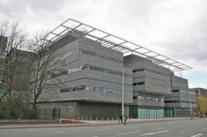

Turing was born in Maida Vale, London, while his father, Julius Mathison Turing (1873–1947), was on leave from his position with the Indian Civil Service (ICS) at Chhatrapur, Bihar and Orissa Province, in British India.[13][14] Turing's father was the son of a clergyman, the Rev. John Robert Turing, from a Scottish family of merchants that had been based in the Netherlands and included a baronet. Turing's mother, Julius' wife, was Ethel Sara (née Stoney; 1881–1976), daughter of Edward Waller Stoney, chief engineer of the Madras Railways. The Stoneys were a Protestant Anglo-Irish gentry family from both County Tipperary and County Longford, while Ethel herself had spent much of her childhood in County Clare.[15]
Julius' work with the ICS brought the family to British India, where his grandfather had been a general in the Bengal Army. However, both Julius and Ethel wanted their children to be brought up in Britain, so they moved to Maida Vale,[16] London, where Alan Turing was born on 23 June 1912, as recorded by a blue plaque on the outside of the house of his birth,[17][18] later the Colonnade Hotel.[13][19] He had an elder brother, John (the father of Sir John Dermot Turing, 12th Baronet of the Turing baronets).
Turing's father's civil service commission was still active and during Turing's childhood years Turing's parents travelled between Hastings in England[20] and India, leaving their two sons to stay with a retired Army couple. At Hastings, Turing stayed at Baston Lodge, Upper Maze Hill, St Leonards-on-Sea, now marked with a blue plaque.
Very early in life, Turing showed signs of the genius that he was later to display prominently.[21] His parents purchased a house in Guildford in 1927, and Turing lived there during school holidays. The location is also marked with a blue plaque.[22]
Education
School

The Alan Turing
Building at the University of Manchester
Turing's parents enrolled him at St Michael's, a day school at 20 Charles Road, St Leonards-on-Sea, at the age of six. The headmistress recognised his talent early on, as did many of his subsequent educators.
From January 1922 to 1926, Turing was educated at Hazelhurst Preparatory School, an independent school in the village of Frant in Sussex (now East Sussex).[23] In 1926, at the age of 13, he went on to Sherborne School, an independent school in the market town of Sherborne in Dorset. The first day of term coincided with the 1926 General Strike in Britain, but he was so determined to attend that he rode his bicycle unaccompanied 60 miles (97 km) from Southampton to Sherborne, stopping overnight at an inn.[24]
Turing's natural inclination towards mathematics and science did not earn him respect from some of the teachers at Sherborne, whose definition of education placed more emphasis on the classics. His headmaster wrote to his parents: "I hope he will not fall between two stools. If he is to stay at public school, he must aim at becoming educated. If he is to be solely a Scientific Specialist, he is wasting his time at a public school".[25] Despite this, Turing continued to show remarkable ability in the studies he loved, solving advanced problems in 1927 without having studied even elementary calculus. In 1928, aged 16, Turing encountered Albert Einstein's work; not only did he grasp it, but it is possible that he managed to deduce Einstein's questioning of Newton's laws of motion from a text in which this was never made explicit.[26]
.
Univeristy and work on computability
After Sherborne, Turing studied as an undergraduate from 1931 to 1934 at King's College, Cambridge, where he gained first-class honours in mathematics. In 1935, at the age of 22, he was elected a fellow of King's on the strength of a dissertation in which he proved the central limit theorem.[33] Unknown to the committee, the theorem had already been proven, in 1922, by Jarl Waldemar Lindeberg.[34]
In 1936, Turing published his paper "On Computable Numbers, with an Application to the Entscheidungsproblem" (1936).[35] In this paper, Turing reformulated Kurt Gödel's 1931 results on the limits of proof and computation, replacing Gödel's universal arithmetic-based formal language with the formal and simple hypothetical devices that became known as Turing machines. Entscheidungsproblem (decision problem) was originally posed by German mathematician David Hilbert in 1928. Turing proved that his "universal computing machine" would be capable of performing any conceivable mathematical computation if it were representable as an algorithm. He went on to prove that there was no solution to the decision problem by first showing that the halting problem for Turing machines is undecidable: It is not possible to decide algorithmically whether a Turing machine will ever halt.
King's College, Cambridge, where Turing was a student in 1931 and became a Fellow in 1935. The computer room is named after him.Although Turing's proof was published shortly after Alonzo Church's equivalent proof[36] using his lambda calculus, Turing's approach is considerably more accessible and intuitive than Church's.[37] It also included a notion of a 'Universal Machine' (now known as a universal Turing machine), with the idea that such a machine could perform the tasks of any other computation machine (as indeed could Church's lambda calculus). According to the Church–Turing thesis, Turing machines and the lambda calculus are capable of computing anything that is computable. John von Neumann acknowledged that the central concept of the modern computer was due to Turing's paper.[38] To this day, Turing machines are a central GoogleAnalyticsObject of study in theory of computation.
From September 1936 to July 1938, Turing spent most of his time studying under Church at Princeton University. In addition to his purely mathematical work, he studied cryptology and also built three of four stages of an electro-mechanical binary multiplier.[39] In June 1938, he obtained his PhD from Princeton;[40] his dissertation, Systems of Logic Based on Ordinals,[41][42] introduced the concept of ordinal logic and the notion of relative computing, where Turing machines are augmented with so-called oracles, allowing the study of problems that cannot be solved by Turing machines. John von Neumann wanted to hire him as his postdoctoral assistant, but he went back to England.[43]
When Turing returned to Cambridge, he attended lectures given in 1939 by Ludwig Wittgenstein about the foundations of mathematics.[44] Remarkably, the lectures have been reconstructed verbatim, including interjections from Turing and other students, from students' notes.[45] Turing and Wittgenstein argued and disagreed, with Turing defending formalism and Wittgenstein propounding his view that mathematics does not discover any absolute truths, but rather invents them.[46]
 Titans of Industry
Titans of Industry